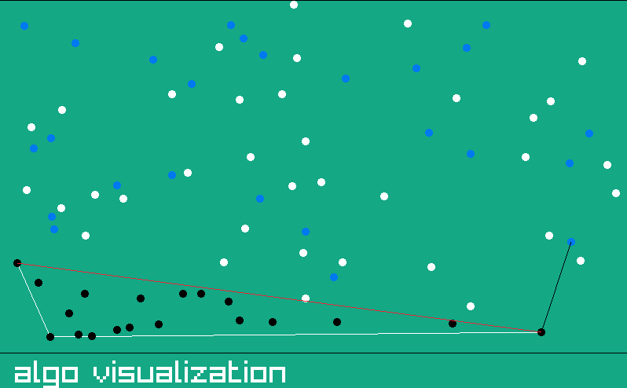

|
JARVIS MARCH (Q1)
jarvis march algorithm
|

|
|
JARVIS MARCH (Q1)
jarvis march algorithm
|
|
The Jarvis March algorithm is also known as the Gift Wrapping algorithm. itis a method for computing the convex hull of a set of points in the plane. It iteratively constructs the convex hull by selecting the next point in the hull as the one that makes the smallest counterclockwise angle with the previous hull point.
Raylib c++ library was used for visualization:Raylib is a simple and easy-to-use open-source game development library that provides a set of tools and functions for creating 2D and 3D games, as well as graphical applications
for the website Wasm was used: WebAssembly (Wasm) is a binary instruction format for a stack-based virtual machine. It is designed as a portable compilation target for programming languages, enabling code to run in web browsers at near-native speed.
for converting c++ code to Wasn Emscripten was used:Emscripten is an open-source toolchain that allows developers to compile C, C++, and other languages into WebAssembly (Wasm) code, enabling them to run native applications on the web.
time complexity is
O(n*m) {in paper stated as : at most (n+1)*m}
where n is number of points and m is number of points in convex hull
time complexity analysis
1) we choose the left most point : can be done in O(n)
2) we then choose the most anti-clockwise point O(n) this would be the next point
we repeat step 2 until we get all points, hence step 2 is repeated m times
the time complexity will be O(n*m)
Optimization:
1)we remove points which are part of the hull
2)we remove points which are inside the area of the temporary formed hull
this would reduce the time complexity ,
hence on average it is lesser than O(n*m),
but worst case will still be O(n*m)

visualization lables:
1) white points : the points which can be the next point of the hull
2) black points : points which cant be the next point in the hull
3) while line : edges of the convex hull
4) red line :points in the polygon formed by this line cant be a part of the convex hull
5) black line :temporary next edge (if the algo finds a better line it will be erased)
6) blue points : points which have been checked in the current loop
7) blue line : line to the point being checked at this instant
in raylib there is a game window and it is run 60 times every second(we can set the rate )
hence we write what all objects we want to draw in this window and then again erase it in the begining of the next frame and draw again hence we need to perform our algo and then display what we want to be in the frame
we move one step ahead in the algo every .1 seconds so that it is easy to visualize
hence the algo had to be done using a single loop if visualization of intermidiate steps also had to be shown.
j increments every .1 seconds and when j becomes equal to n , it is set to 0 and i is incremented
this way even intermidiate steps can be visualized
there are different phases when select==1 : we are in the selection phase where user can select points if select==0 and over==0: algo visualization is going on if over==1 : the visualization is over and user can restart if he wants to
for finding most anti- clockwise point
we use crossproduct to find the orientation :
(q.y - p.y) * (r.x - q.x) - (q.x - p.x) * (r.y - q.y)
if we find a point which is more anti: clockwise we update next point with this points value
selection phase :
user can select point by clicking on the screen
user can add 30 random points by clicking 'R'
user can clear screen by clicking 'delete'
user can remove last point by clicking 'backspace'
user can start visualization by clicking 'enter'
visualization phase :
user can increase speed by clicking 'right arrow'
user can decrease speed to .1 sec per step by clicking 'left arrow'
user can stop running the algorithm and reset screen by clicking 'delete'
over phase :
user can repeat the visualization by clicking 'R'
user can restart the process by clicking 'enter'